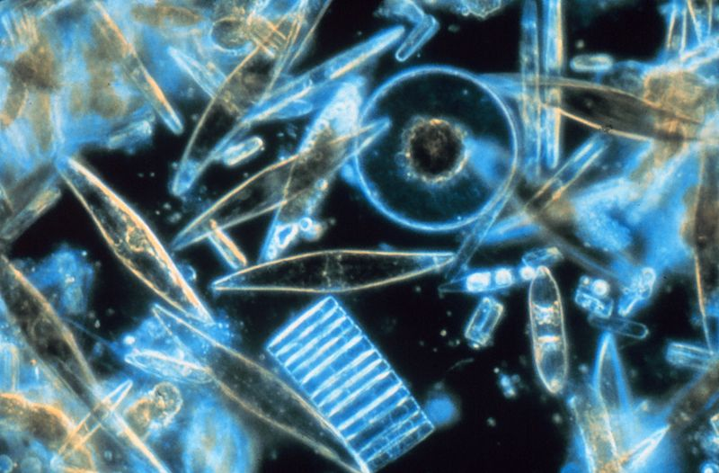

Introduction : Il y eut Eru, le Premier, qu’en Arda on appelle Ilúvatar ; il créa d’abord les Ainur, les Bénis, qu’il engendra de sa pensée, et ceux-là furent avec lui avant que nulle chose ne fût créée. Et il leur parla, leur proposa des thèmes musicaux, ils chantèrent devant lui et il en fut heureux. Un long temps s’écoula où ils chantèrent chacun seul, ou à quelques-uns, pendant que les autres écoutaient, car chacun ne comprenait que cette part de l’esprit d’Ilúvatar d’où lui-même était issu, et le sentiment de leur ressemblance mit longtemps à venir. Pourtant une meilleure compréhension leur vint à mesure qu’ils écoutaient et les fit croître en accord et en harmonie.
C’était une époque malheureuse : les gens de l’Est réfugiés à Hithlum méprisaient ce qui restait du peuple d’Hador, les opprimaient, leur prenaient leurs terres et leurs biens et réduisaient leurs enfants en esclavage. Pourtant la Dame de Dor-lómin était si belle et majestueuse qu’elle faisait peur aux Orientaux qui n’osaient pas porter les mains sur elle ni sur les siens.
b. La branlée du Balrog
Pourtant il y en eut pour le voir venir de loin, à cause de la grande lueur qui le précédait, et ils allèrent en hâte le dire à Valimar. Eärendil monta sur la colline de Túna, la trouva déserte, parcourut les rues de Tirion qui étaient vides, et il eut soudain le cœur lourd, craignant qu’un fléau se fût abattu sur le Royaume Bienheureux.
II. Gandalf est devenu blanc
a. Une nouvelle mode capillaire
Mais cela ne lui servit de rien. Les Balrogs furent détruits, sauf quelques-uns qui s’enfuirent pour se cacher dans des grottes inaccessibles dans les racines de la terre. Les innombrables légions des Orcs périrent comme des brins de paille dans un incendie ou furent balayées comme des feuilles mortes par un ouragan.
Figure 1 : Ceci est une légende pour les schémas

×
Légende de la photo
b. Un tout nouveau poney, blanc lui aussi
Les Pères des Humains des trois maisons fidèles furent, eux aussi, richement récompensés : Eönwë vint parmi eux les enseigner, il leur donna la sagesse, le pouvoir et une existence plus longue qu’aucun mortel avant eux.
Conclusion : Et derniers de tous, les Gardiens des Trois Anneaux se rendirent à la mer et Maître Elrond prit le navire que lui avait gardé Círdan. Ses voiles sortirent de Mithlond au crépuscule d’automne, bientôt les mers du Monde courbé se dérobèrent sous lui, les vents de la voûte céleste ne le traversèrent plus, les courants du ciel l’emportèrent au-dessus des brumes du monde jusqu’à l’Ancien Ouest, et ce fut la fin des histoires et des chants des Eldar.
Ouverture : qu'adviendra t-il de la Terre du milieu ?